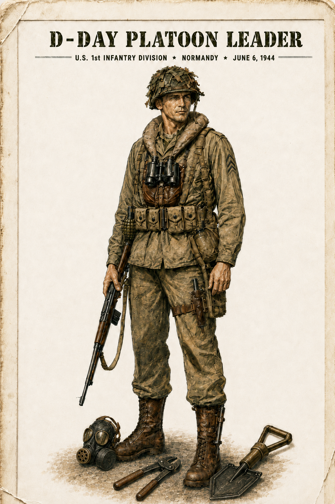

What U.S. Soldiers Wore and Carried
Explore visual reference images of the clothing, equipment, and personal gear associated with U.S. soldiers on D-Day. Click any image for a closer look.
Explore a D-Day Platoon Leader
Select a numbered hotspot to view the matching item image and description.
D-Day Platoon LeaderU.S. 1st Infantry Division · Normandy · June 6, 1944

Visual type: Illustration / historical reconstruction reproduced from the original Operation Overlord Part 3 source; it is not a period photograph. The original reconstruction depicts jump boots even though the figure is labeled U.S. 1st Infantry Division; item 16 below provides the historical correction for infantry footwear.
UnexploredExploredSelected
Equipment Index
Quick Check
Use what you learned from the opening visuals and interactive image.
Sources / References
- Operation Overlord: The Invasion of Normandy: D-Day, Part 3, “A U.S. Soldier Outfit,” original project materials. Provides the equipment outline, opening visual-reference material, and D-Day platoon-leader illustration used in this Part. The source files available for this project do not supply individual creator/repository metadata for every visual.
- U.S. Army Center of Military History. Survey of U.S. Army Uniforms, Weapons and Accoutrements. Used to verify the M1 Carbine’s World War II role and broader U.S. Army equipment context.
- U.S. Army Quartermaster Museum. “World War II Inductee Clothing Issue.” Used to verify common Army clothing and equipment such as the field jacket, canteen, web belt, and service shoes.
- U.S. Army Center of Military History. The Quartermaster Corps: Organization, Supply, and Services, Volume I. Used to verify the development of the Type III service shoe and combat boot and the distinction between infantry footwear and the special parachute boot.
- U.S. Army. “Picatinny engineer pursues improved hand grenade.” Used to verify that the Mills bomb was a British grenade design.
- U.S. Army. “2-1 STB soldiers demonstrate proficiency at grenade range.” Used to verify the Mk 2 “pineapple” grenade as the U.S. fragmentation grenade associated with World War II service.